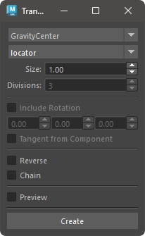

Creates transform nodes for selected nodes or components.
How to Use
Launch from the dedicated menu or the following command:
import faketools.tools.transform_creator_ui
faketools.tools.transform_creator_ui.show_ui()

Basic Usage
- Select the transform creation method from the dropdown menu at the top.
- Select the transform node or component in the scene.
- Configure the other options. Options that are not grayed out can be set.
- Press the [ Create ] button to create the transform nodes.
※ Selectable components include Vertex, Edge, Face, CurveCV, CurveEP, and SurfaceCV.
Options
- Node Type
- Choose between locator or transform.
- Divisions
- Valid only when the creation method is set to innerDivide. Specifies the number of divisions between selected nodes.
- Include Rotation
- Determines whether the created transform nodes include rotation attributes.
- Rotation Offset Value
- Sets the rotation offset value for the created transform nodes.
- Tangent from Component
- For Vertex and Edge, the rotation is set by obtaining the tangent vector from the components connected to those components.
- Reverse
- Reverses the order of the transform nodes if duplicated.
- Chain
- Arranges duplicated transform nodes into a chain hierarchy.
- Preview
- Displays a preview of the transform nodes to be created.
Creation Methods
- GravityCenter
- Creates transform nodes at the center of gravity of the selected nodes.
- BoundingBoxCenter
- Creates transform nodes at the center of the bounding box of the selected nodes.
- EachPositions
- Creates transform nodes at each position of the selected nodes.
- InnerDivide
- Divides the space between the selected nodes and creates transform nodes at the intervals.